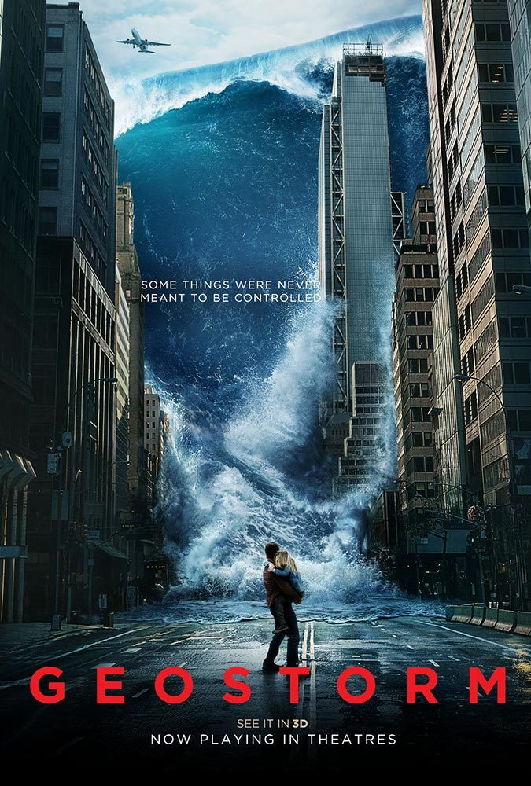

Fantasy.
Thor: Ragnarok.
Release Date: 2 November 2017 (Russia).
Genres: Action | Adventure | Fantasy | Sci-Fi
Storyline:Thor is imprisoned on the other side of the universe and finds himself in a race against time to get back to Asgard to stop Ragnarok, the destruction of his homeworld and the end of Asgardian civilization, at the hands of an all-powerful new threat, the ruthless Hela.
Transformers.
Release Date: 4 July 2007 (Russia).
Genres:Fantasy |Action | Adventure | Sci-Fi
Storyline:A long time ago, far away on the planet of Cybertron, a war is being waged between the noble Autobots (led by the wise Optimus Prime) and the devious Decepticons (commanded by the dreaded Megatron) for control over the Allspark, a mystical talisman that would grant unlimited power to whoever possesses it. The Autobots managed to smuggle the Allspark off the planet, but Megatron blasts off in search of it. He eventually tracks it to the planet of Earth (circa 1850), but his reckless desire for power sends him right into the Arctic Ocean, and the sheer cold forces him into a paralyzed state. His body is later found by Captain Archibald Witwicky, but before going into a comatose state Megatron uses the last of his energy to engrave into the Captain's glasses a map showing the location of the Allspark, and to send a transmission to Cybertron. Megatron is then carried away aboard the Captain's ship. A century later, Captain Witwicky's grandson Sam Witwicky (nicknamed Spike by his friends) ... Written by Q. Leo Rahman
Skyline.

Release Date: 11 November 2010 (Russia).
Storyline:Jarrod and his pregnant girlfriend Elaine travel to Los Angeles to meet his old friend and successful entrepreneur Terry, and his wife Candice. Terry gives a party in his apartment for Jarrod and offers a job position to him in LA. Terry's assistant and lover Denise (Crystal Reed) and his friend Ray (Neil Hopkins) sleep on the couch in the living room, but in the dawn of the next morning, the group is awakened by mysterious beams of blue light. Ray stares at the light and is taken by the mysterious force. The group of friends try to escape from the alien invaders. Written by Claudio Carvalho, RIo de Janeiro, Brazil.
Baby Driver.

Release Date: 24 August 2017 (Russia).
Genres: Action | Crime | Music | Fantasy
Storyline:Baby is a young and partially hearing impaired getaway driver who can make any wild move while in motion with the right track playing. It's a critical talent he needs to survive his indentured servitude to the crime boss, Doc, who values his role in his meticulously planned robberies. However, just when Baby thinks he is finally free and clear to have his own life with his new girlfriend, Deborah, Doc coerces him back for another job. Now saddled with a crew of thugs too violently unstable to keep to Doc's plans, Baby finds himself and everything he cares for in terrible danger. To survive and escape the coming maelstrom, it will take all of Baby's skill, wits and daring, but even on the best track, can he make it when life is forcing him to face the music? Written by Kenneth Chisholm (kchishol@rogers.com)
Geostorm.

Release Date: 19 October 2017 (Russia) .
Genres: Action | Sci-Fi| Fantasy | Thriller
Storyline:When catastrophic climate change endangers Earth's very survival, world governments unite and create the Dutch Boy Program: a world wide net of satellites, surrounding the planet, that are armed with geoengineering technologies designed to stave off the natural disasters. After successfully protecting the planet for two years, something is starting to go wrong. Two estranged brothers are tasked with solving the program's malfunction before a world wide Geostorm can engulf the planet.